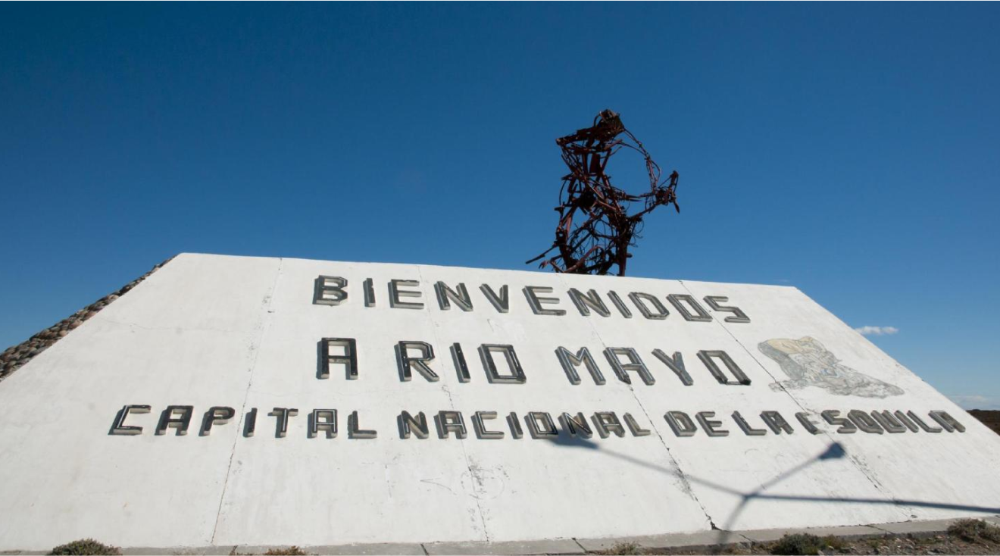

02/09/2021
San Martín en los testimonios tehuelches
“Lo que el árbol tiene de florido, vive de lo que tiene sepultado”. Iniciaron un proyecto productivo y turístico que viene de antes, pero que no se queda en el pasado, sino que se proyecta hacia...